1. What Is a Burglar Alarm System?
A burglar alarm system is an integrated security solution that detects unauthorized entry into your property and triggers alerts to deter intruders and notify you or authorities. But it's more than just a siren—it's a comprehensive detection, alert, and response system designed to protect what matters most.
Why You Need One
Burglars don't just steal material possessions—they steal your peace of mind. The decision to install a burglar alarm is one of the smartest investments you can make for your home or business.
Studies consistently show that homes without burglar alarms are three times more likely to be broken into than homes with visible alarm systems. The presence of alarm signage alone acts as a powerful deterrent, signaling to would-be intruders that your property is protected and not worth the risk.
Beyond deterrence, modern burglar alarms provide real-time alerts directly to your mobile phone, allowing you to respond immediately whether you're at home, at work, or traveling overseas. Integration with CCTV systems enables video verification—you can see what triggered the alarm and make informed decisions about whether to call the police.
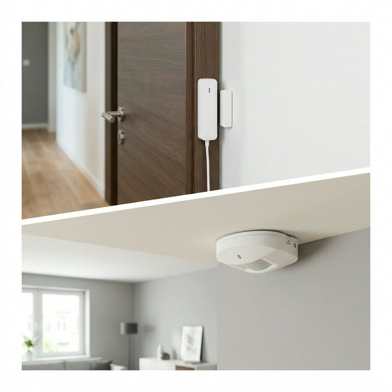
A visible alarm system is your first line of psychological defense.What Modern Systems Can Do
Today's burglar alarms go far beyond simple detection:
- ✓ Mobile Integration: Receive instant alerts via SMS or mobile app notifications. Arm and disarm your system remotely from anywhere in the world.
- ✓ Video Verification: Integration with CCTV cameras allows you to see what triggered the alarm. No more guessing whether it's a false alarm or a real intrusion.
- ✓ Multi-Zone Control: Different arming modes for different situations—full protection when you leave, perimeter-only when you're home, and customizable zones for complex properties.
- ✓ Central Monitoring: Optional 24/7 professional monitoring ensures that even if you can't respond, trained operators will contact you and dispatch help if needed.
- ✓ Smart Home Integration: Modern systems integrate with access control, intercoms, auto gates, and building management systems for complete property automation.
2. How Does a Burglar Alarm System Work?
Understanding the components and how they work together helps you make informed decisions about your security needs.
The Six Core Components
Control Panel (Main Panel)
The control panel is the brain of your burglar alarm system. Located in a secure area like a utility room or storage space, it processes all sensor inputs and manages the entire system.
The panel contains the main microprocessor running the alarm software. It features multiple inputs called "zones"—typically 8 zones in basic systems, expandable to 50+ zones in advanced panels like the RISCO LightSYS.
Each zone can be configured individually with different characteristics: entry/exit delays, instant triggers, bypass options, and custom naming. The panel monitors all zones continuously and triggers alarms when programmed conditions are violated.
Modern panels include built-in communication modules for phone line, internet (IP), and cellular (GSM) connectivity. They're powered by a 12V DC power supply with a 7AH backup battery that maintains operation for 2-4 hours during power failures.
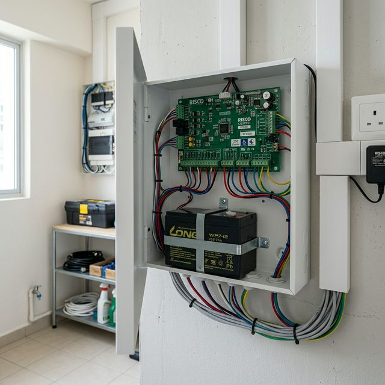
The control panel serves as the central intelligent hub.Keypads
Keypads are your primary interface with the alarm system. Mounted near entry doors for convenient access, they allow you to arm and disarm the system, check zone status, view alarm history, and activate panic functions.
Modern keypads feature LCD displays showing system status, triggered zones, and fault conditions. User-friendly menu navigation makes programming and operation straightforward even for non-technical users.
Advanced keypads like the Paradox TM50 Touch feature full-color touchscreens with intuitive icons and menus, providing a smartphone-like experience for alarm control.
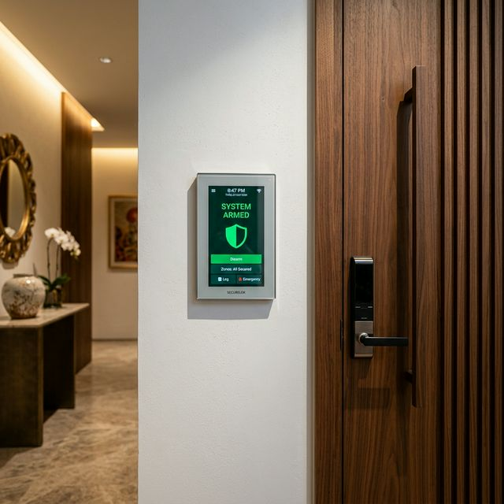
Modern touchscreens make system operation intuitive.Sensors & Detectors
Sensors are the detection layer of your alarm system. Different sensor types detect different intrusion methods—doors and windows opening, motion inside the property, glass breaking, or perimeter breaches.
Each sensor connects to a specific zone on the control panel. When a sensor is triggered, it sends a signal to the panel identifying which zone was violated. The panel then executes the programmed response for that zone.
Sensors can be wired (connected via cables) or wireless (battery-powered with radio communication). Each approach has advantages depending on your property type and installation timing.
Sirens & Strobe Lights
When an alarm is triggered, the external siren serves two critical purposes: frighten the intruder and attract attention from neighbors or passersby.
Sirens are mounted externally on building facades, producing loud alarm tones typically exceeding 100 decibels. Strobe lights provide visual indication of which property is alarmed, especially useful in dense residential areas.
Singapore's Code of Practice SS558:2010 limits siren duration to 10 minutes maximum. This prevents prolonged noise disturbance while still providing sufficient alert time for response.
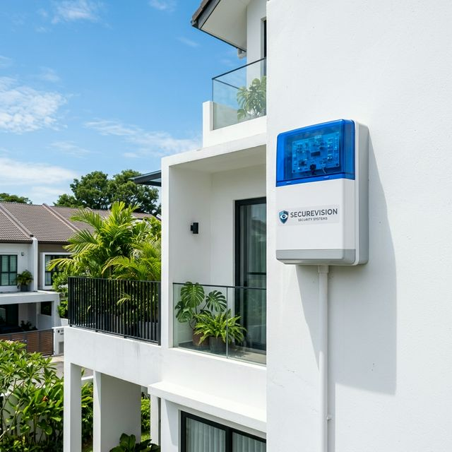
Internal and external sirens provide both auditory and visual alerts.Communication & Alerts
Modern alarm panels connect to the outside world through multiple communication paths. This ensures you receive alerts even if one communication method fails.
- Phone Line (PSTN): Traditional landline connection. Reliable but vulnerable to line cutting.
- Internet (IP): Network connection via your router. Fast, reliable, enables mobile app features. Requires stable internet connection.
- Cellular (GSM): Mobile network connection via SIM card. Independent of your phone/internet lines. Ideal backup communication path.
- Dual-Path Communication: Best practice combines IP primary with GSM backup. If internet fails, GSM takes over automatically.
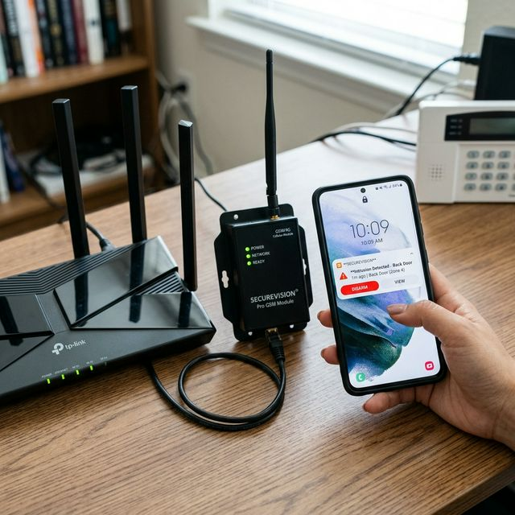
Multi-path communication ensures you never miss a critical alert.Backup Power Supply
Every alarm system includes a maintenance-free sealed lead-acid battery (typically 12V 7AH) inside the control panel. This backup battery automatically takes over during power failures, keeping your system operational for 2-4 hours.
The panel continuously monitors battery health. If the battery weakens or fails to hold charge, the keypad displays a "battery fault" warning. Batteries should be replaced every 2-3 years as performance deteriorates over time.
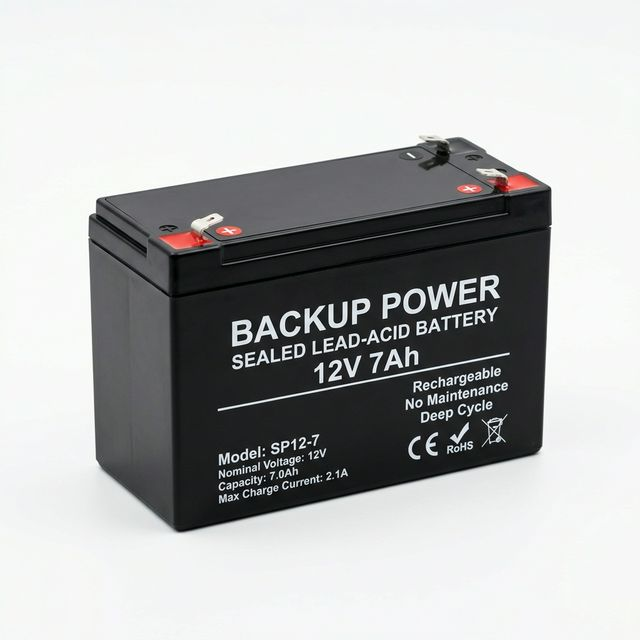
Redundant power ensures your home is protected even during blackouts.How It All Works Together
Here's what happens from the moment an intruder triggers a sensor to the moment you receive an alert:
- Step 1: Detection - A sensor detects an intrusion—a door opens, motion is detected, or glass breaks. The sensor sends a signal to its assigned zone on the control panel.
- Step 2: Panel Processing - The control panel receives the zone trigger and checks the zone configuration. If the system is armed and the zone is active (not bypassed), the panel initiates the alarm sequence.
- Step 3: Delay Period (If Configured) - Entry/exit zones may have a delay period (typically 30-45 seconds). This gives you time to disarm before the alarm sounds. Instant zones like back doors or windows trigger immediately with no delay.
- Step 4: Alarm Activation - If not disarmed during the delay period, the panel activates the siren and begins communication procedures.
- Step 5: Communication - The panel simultaneously sends alerts through all configured communication paths: SMS to your mobile phone, notification through the mobile app, recorded voice call, and signal to central monitoring station if subscribed.
- Step 6: Your Response - You receive the alert, verify whether it's a real intrusion or false alarm, and take appropriate action—disarm remotely, view cameras for video verification, or call police if confirmed.
3. Types of Burglar Alarm Systems
Choosing the right type of burglar alarm depends on your property, budget, installation timing, and operational preferences. Here are the main distinctions you need to understand.
Wired Burglar Alarm Systems
Wired systems use physical cables to connect every sensor and keypad back to the main control panel. Cabling is typically concealed within ceilings or conduits.
When Wired Is Best: If you're currently renovating or building a new property, a wired system is the gold standard. Since the walls are open or ceilings are accessible, running cables is cost-effective and provides the highest possible reliability without any battery maintenance for sensors.
Wired systems are the primary choice for commercial properties and high-security residential installations where long-term stability and physical security of the signal path are paramount.
Advantages
- Superior Reliability: Physical cable connections are more stable than radio signals.
- Lower Sensor Cost: Wired sensors cost 30-50% less than wireless.
- No Battery Maintenance: Sensors never need battery replacement.
- Universal Compatibility: Standard wired sensors work with any wired alarm panel.
- Long Lifespan: Properly installed systems can last 15-20 years.
Considerations
- Installation Complexity: Requires running cables throughout the building.
- Aesthetics: If done after renovation, may require trunking.
- Fixed Locations: Moving a sensor requires re-wiring.
Wireless Burglar Alarm Systems
Wireless systems use battery-powered sensors that communicate with the control panel via encrypted radio signals. No cables required—sensors mount with screws or adhesive, making installation fast and non-invasive.
When Wireless Is Best: Wireless systems are perfect if you've already completed renovation or moved into your property. Installation is quick (typically 4-8 hours) with no cable runs required. Walls remain intact, making wireless ideal for rental properties, conservation homes, or anywhere cabling is difficult.
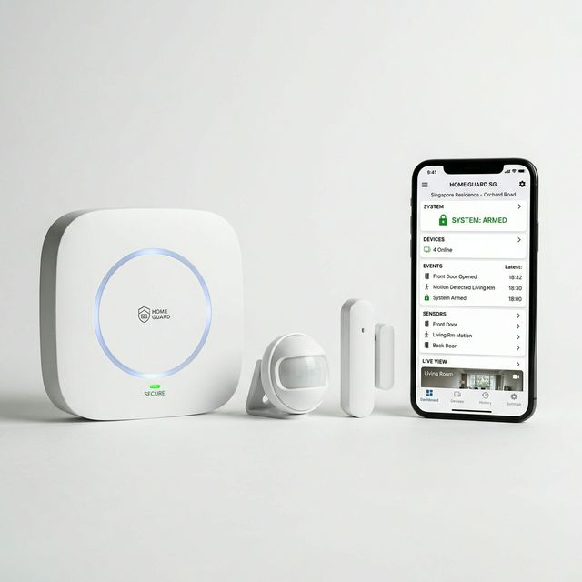
Wireless systems offer clean aesthetics and rapid deployment for modern Singaporean homes.Recommendation
Choose wired if renovating or building new—you'll save money and get maximum reliability. Choose wireless if you've already moved in and want fast, clean installation without drilling walls.
For large properties, consider hybrid systems combining wired infrastructure with wireless expansion.
| Feature | Wired | Wireless |
|---|---|---|
| Best Installation Timing | During renovation / before move-in | After move-in / completed properties |
| Installation Time | 1-3 days | 4-8 hours |
| Reliability | Excellent - physical connections | Excellent - modern encryption |
| Cost Per Sensor | Lower ($$) | Higher ($$$) |
| Battery Maintenance | Panel only (one battery) | Every sensor (multiple batteries) |
| Flexibility | Fixed sensor locations | Easy to add/move sensors |
| Lifespan | 15-20 years | 10-15 years |
4. Burglar Alarm Sensors & Detectors Explained
Understanding different sensor types helps you design effective protection. Each sensor type detects different intrusion methods—here's how they work and when to use them.
Magnetic Contacts (Door/Window Sensors)
Magnetic contacts are the most common sensor in any burglar alarm system. They detect when doors or windows are opened by monitoring the position of a magnet relative to a reed switch.
A magnetic contact consists of two parts: the reed switch mounted on the door frame, and the magnet mounted on the door itself. When the door is closed, the magnet aligns with the reed switch, holding the internal contact closed. When the door opens, the contact breaks, triggering the alarm.
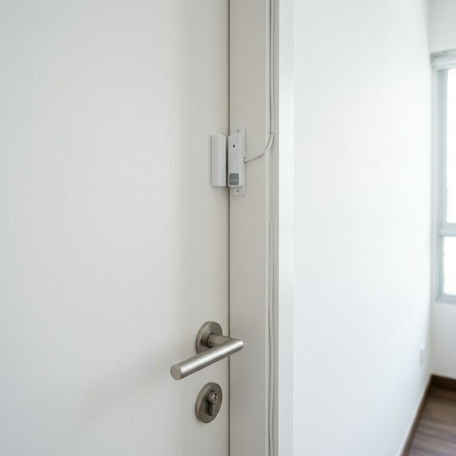
Invisible protection for every entry point.Passive Infrared (PIR) Motion Sensors
Motion sensors detect moving heat sources—primarily people—within their coverage area. Standard PIR sensors provide coverage of 12-15 meters in a cone-shaped pattern.
Pet-Immune PIR Sensors: We use pet-immune sensors to distinguish between human-sized heat sources and small animals (up to 25kg), minimizing false alarms from cats or small dogs.
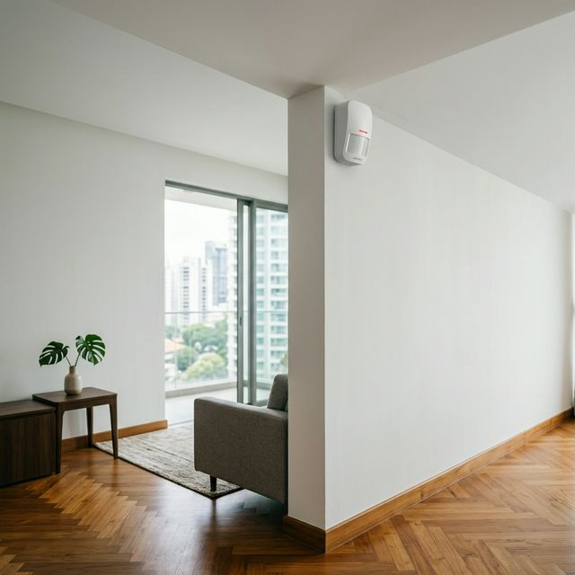
Widespread coverage for internal living spaces.Glass Break Detectors
These detect the specific acoustic signature of breaking glass—the initial impact followed by the high-frequency shattering. Ideal for storefronts or rooms with large sliding doors.
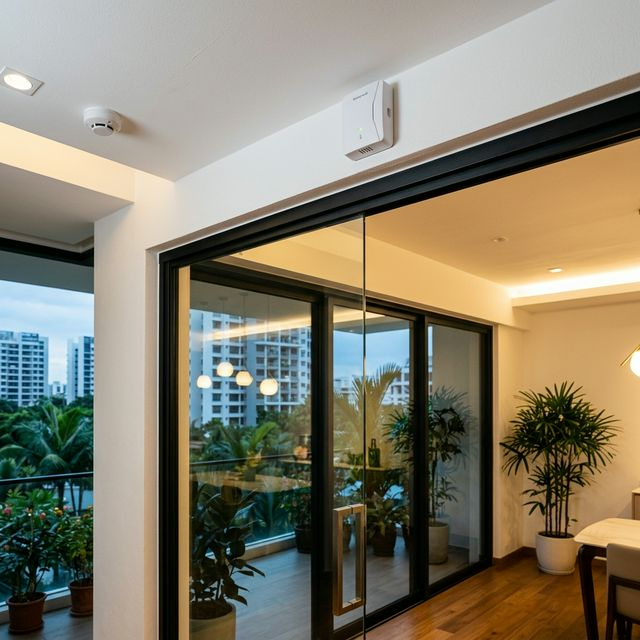
Acoustic sensors provide perimeter coverage for large glass areas.Vibration & Shock Sensors
Vibration sensors detect mechanical shocks caused by forced entry attempts—drilling, sawing, or hammering. They're particularly effective for protecting safes, doors, and walls.
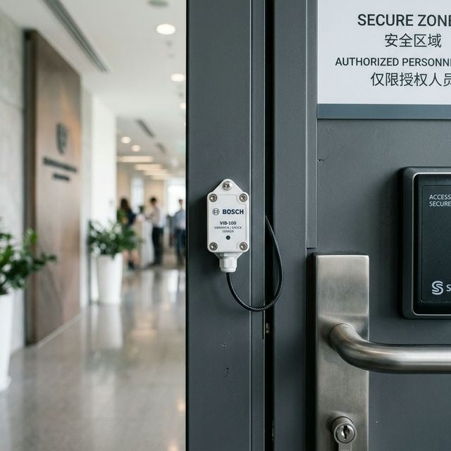
Early warning by detecting structural impact before a breach occurs.Infrared Beam Detectors
Beam detectors create invisible infrared boundaries. When the light path is broken, the alarm triggers. These are ideal for perimeter protection over long distances (up to 100m+).
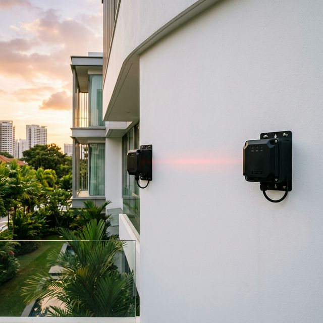
High-precision perimeter detection for large estates and facilities.Panic Buttons
Panic buttons allow instant manual alarm activation for emergencies. Available as fixed wall-mounted units or portable pendants for personal safety.
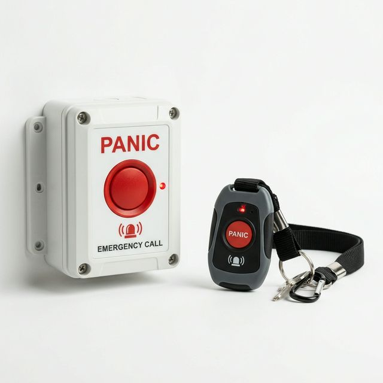
Instant alerts for personal safety and high-threat situations.5. Planning Your Burglar Alarm System
Effective security isn't about protecting everything—it's about protecting the right things in the right way.
Coverage Strategies by Property Type
Residential Properties (Homes)
The Layered Defense Approach:
- Layer 1: Perimeter - Magnetic contacts on all entry doors and ground floor windows.
- Layer 2: Interior - PIR motion sensors covering stairway landings and hallways.
- Layer 3: Valuables - Vibration sensors on safes and contacts on master bedroom doors.
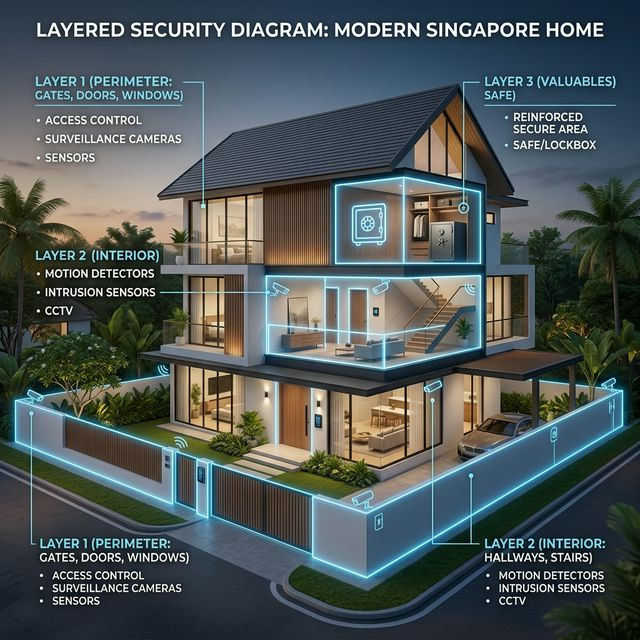
A multi-layered strategy provides the highest probability of early detection.Offices & Commercial Properties
Prioritize public entrances, after-hours spaces, and critical assets like server rooms or inventory storage. We often integrate panic buttons at reception desks for staff safety.
Integration with access control systems ensures that the alarm is automatically disarmed when the first authorized employee enters the building.
Apartments & Condos
Focused planning on the main entrance and balcony access points. Since entries are few, we focus on high-reliability sensors with mobile app alerts.
For ground floor or penthouse units, we recommend additional protection for all sliding doors and windows leading to private enclosed spaces (PES).
 High-rise security relies on protecting the core access points.
High-rise security relies on protecting the core access points.
Minimizing False Alarms
False alarms frustrate everyone. Singapore's Code of Practice SS558:2010 limits siren duration to 10 minutes to prevent noise disturbance. We minimize false triggers through:
- Correct Placement: Avoiding heat sources and direct sunlight for motion sensors.
- Pet Immunity: Using specialized sensors for homes with animals.
- Dual-Tech Sensors: Combining PIR and microwave detection for high-risk zones.
- System Maintenance: Regular testing and timely battery replacement.
6. What Does a Burglar Alarm System Cost?
Understanding the investment required helps you plan and budget appropriately. Burglar alarm costs vary based on property size, system type, number of sensors, and monitoring requirements. Here's what to expect.
Typical Investment Ranges
Costs vary significantly based on property type and coverage requirements. These ranges include all equipment, professional installation, programming, testing, user training, and warranty.
| Property Type | System Type | Typical Coverage | Investment Range |
|---|---|---|---|
| HDB 3-4 Room | Wireless | Main door + motion sensor | $800 - $1,500 |
| HDB 5-Room / EC | Wireless | Door + windows + motion | $1,200 - $2,000 |
| Small Condo | Wireless | Entry + balcony + motion | $1,200 - $2,500 |
| Landed Terrace | Wired | Perimeter + motion zones | $2,000 - $4,000 |
| Semi-Detached | Wired | Comprehensive coverage | $3,000 - $6,000 |
| Detached / GCB | Wired + Expansion | Full coverage multi-zone | $5,000 - $12,000 |
| Small Office | Wired | Entry + critical areas | $1,500 - $3,500 |
| Medium Office | Wired | Multi-zone + panic buttons | $3,000 - $7,000 |
| Retail Shop | Wired | Entry + motion + glass break | $2,000 - $5,000 |
Six Factors That Determine Your Investment
Factor 1: Property Size & Layout
Larger properties require more sensors and complex wiring. Multi-story properties add installation scope due to cable runs between floors.
Factor 2: Number of Entry Points
Every door and accessible window adds to the hardware count. A landed home might have 20+ entry points compared to an apartment's 5.
Factor 3: Wired vs Wireless
Wired systems have lower sensor costs but higher labor. Wireless is faster to install but hardware is premium-priced.
Factor 4: Monitoring Requirements
Self-monitoring is free, while central monitoring (CAMS) adds annual professional fees.
How to Optimize Your Investment
- Install During Renovation: Wired systems are significantly cheaper during this phase.
- Right-Size Coverage: Focus on accessible entry points and use motion sensors as backup.
- Start Essential: Expand with more sensors later as your budget allows.
7. Central Alarm Monitoring Options
Central monitoring adds a professional response layer to your alarm system. It's not mandatory for all properties, but certain situations strongly benefit from 24/7 professional oversight.
When Central Monitoring Is Highly Recommended
Commercial & Retail Properties: Often an insurance requirement. Professional verification speeds up police response and provides documentation for claims.
High-Value Residential: Properties containing significant valuables (art, jewelry) benefit from professional oversight and potential insurance discounts.
Unoccupied Properties: Holiday homes or vacant buildings where no one is regularly present to receive self-monitoring alerts.
The Hybrid Approach
Many users combine Self-Monitoring (instant app alerts) with Central Monitoring (professional backup). This ensures you get the first chance to respond, with professionals standing by if you're unreachable.
What You Get with Professional Monitoring
- 24/7 Professional Oversight (Holidays, 3 AM, always watching)
- Immediate Contact Verification (Password-based)
- Police Dispatch Coordination (Faster, verified response)
- Duress Code Protection (Silent alerts under threat)
8. Understanding Alarm Operation & Daily Use
Operating a modern burglar alarm is straightforward. Most users interact with their system daily through a wall-mounted keypad or mobile app.
Arming & Disarming Basics
Using the Keypad: Enter your 4-6 digit code then press ARM. The system provides beep countdowns during exit and entry delay periods.
Using Mobile Apps: Remote control from anywhere. Verify zone status (doors closed) and press ARM in the app. No delay is needed if you're already off-site.
 Full system visibility and control via any mobile device.
Full system visibility and control via any mobile device.
Common Arming Modes
- Away Mode (Full Arm): All sensors active. Use when everyone leaves the property.
- Stay Mode (Home Mode): Perimeter active, interior motion sensors inactive. Use when you are moving around inside.
- Night Mode: Ground floor active, upper floor inactive. Protects your home while you sleep upstairs.
The Alarm Event Sequence
- Detection: Sensor sends trigger to panel.
- Processing: Panel checks arming status and zone type.
- Alerts: Siren activates, SMS/App notifications send immediately.
- Response: You or the monitoring center verify the event and contact police if necessary.
9. Real Installation Examples
Every property is different, and effective security design must adapt to specific challenges. Here are real installations we've completed.
Landed Property in Bukit Timah (AJAX Wireless)
Challenge: Family moved in post-renovation. No hacking or visible cables allowed. Needed pet-immune coverage for two small dogs.
Solution: AJAX Hub Plus system with 15 magnetic contacts and 4 pet-immune PIRs. Installation completed in one day without a single drill hole for cabling.
Investment: $3,800 + setup.
 A clean, wireless implementation for completed homes.
A clean, wireless implementation for completed homes.
Retail Shop in Chinatown (Wired + Monitoring)
Challenge: High-value inventory (jewelry). Previous rear-door break-in attempt. Insurance required professional CAMS monitoring.
Solution: RISCO LightSYS wired system. Ceiling-mounted glass break sensors for shopfront and vibration sensors for the safe. 24/7 monitoring via Chubb.
Investment: $4,200 + $600/year monitoring.
 Wired infrastructure for maximum long-term stability and compliance.
Wired infrastructure for maximum long-term stability and compliance.
Industrial Warehouse in Woodlands (Zoned Protection)
Challenge: 15,000 sqft facility with 24/7 shift work. Needed to protect raw material cages while loading bays were active.
Solution: Multi-zone wired system with selective arming. Perimeter beams for the fence line and vibration sensors on high-value storage cages.
Investment: $18,500 + $1,200/year guard response.
 Zoned protection allows operations to continue while high-value assets remain secured.
Zoned protection allows operations to continue while high-value assets remain secured.
10. Maintenance & Testing Your Burglar Alarm
Installing a burglar alarm is just the first step. Regular maintenance ensures it's there when you need it.
The Annual Walk-Test (DIY)
A walk-test verifies every sensor is communicating correctly. Perform this every 6-12 months:
- Notify Monitoring: Call your CAMS center so they don't dispatch police!
- Arm System: Set to Away mode and wait for exit delay.
- Trigger Sensors: Systematically open every door and window. Verify the siren triggers and you receive app alerts.
- Check Motion: Walk through every room with PIR sensors.
- Notify Completion: Call CAMS back to confirm test signals were received.
Battery Replacement Schedule
- Main Panel Battery: Replace every 2-3 years. Uses 12V 7AH sealed lead-acid.
- Wireless Sensors: Replace every 3-5 years. Typically CR123A or CR2032 lithium.
11. 10 Ways to Make Your Alarm More Effective
1. Visible Signage
Visible decals on gates and sirens act as a powerful deterrent. Burglars look for "soft" targets without visible security.
2. Dual-Path Comms
Use both Internet (IP) and Cellular (GSM). If an intruder cuts your phone/fiber line, the system switches to mobile data.
3. Video Verification
Integrate with CCTV. When an alarm triggers, see exactly what's happening via your mobile app before calling police.
4. Tamper Switches
Ensure all sirens and panels have 24/7 tamper protection that triggers an alarm if someone tries to disconnect them.
Pro Tip: Arm Consistently
The best system provides zero protection if not armed. Use "Stay Mode" when home and "Night Mode" before bed to protect your perimeter while you sleep.
12. Common Burglar Alarm Mistakes to Avoid
1. Waiting Until After a Break-In
Prevention costs far less than recovery. Don't wait for a "wake-up call" to secure your home.
2. Protecting Only Front Doors
Side gates and ground-floor windows are more likely to be targeted by opportunistic burglars.
3. Poor User Training
Ensure every household member knows how to disarm the system to avoid frequent false alarms.
4. Choosing Based Solely on Price
Inferior equipment triggers frequent errors and false alerts, making the system difficult to trust.
13. Insurance Benefits & Singapore Compliance
Insurance Discounts
Many Singaporean insurers offer 10-15% premium discounts for professionally monitored alarm systems. Ensure you have your Installation Certificate ready for audits.
Police Licensing (PSIA)
In Singapore, only Police-licensed contractors are legally allowed to install security systems. Securevision maintains full licensing (L/PS/000267/2023P) to ensure your system is compliant and qualifies for insurance claims.
14. Burglar Alarm Brands We Recommend
RISCO LightSYS
Our top recommendation for Wired & Hybrid systems. Best for reliability, heavy-duty industrial sensors, and professional CAMS monitoring.
AJAX
The gold standard for Wireless residential security. Award-winning design, 7-year battery life, and clean, cable-free aesthetics.
Paradox
Proven reliability with an extensive track record. An excellent value choice for standard residential wired installations.
DSC PowerSeries
Robust legacy panels. We provide full service and upgrades for existing DSC installations across Singapore.
15. Frequently Asked Questions
How long does installation take?
Wireless systems (like AJAX) typically take 4-8 hours. Wired systems for a standard landed home take 1-3 days including cabling concealment.
What happens if I lose power?
All our systems include 12V backup batteries providing 4-8 hours of operation. The system and sensors remain fully active even during a blackout.
Will my pets trigger the alarm?
We use specialized pet-immune PIR sensors that ignore animals up to 25kg while still detecting human intruders accurately.